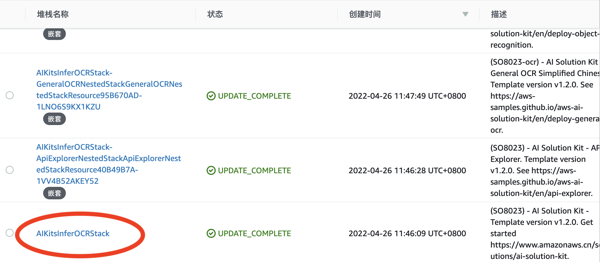

人脸检测
识别人脸面部特征，将检测到的五官与轮廓关键点信息映射到64个矢量坐标上。
适用场景
可应用于摄像头监控、人脸特征分析、互动营销等多种场景。
API参数说明
-
HTTP 方法:
POST -
Body 请求参数
| 名称 | 类型 | 是否必选 | 说明 |
|---|---|---|---|
| url | String | 与 img 参数二选一 | 图像的 URL 地址。支持 HTTP/HTTPS 和 S3 协议。要求图像格式为 jpg/jpeg/png/bmp ，最长边不超过 4096px。 |
| img | String | 与 url 参数二选一 | 进行Base64编码的图像数据 |
- 请求 Body 示例
{
"url": "图像的URL地址"
}
{
"img": "Base64编码的图像数据"
}
- 返回参数
| 名称 | 类型 | 说明 |
|---|---|---|
| Faces | List | 图像中找到的人脸列表 |
| landmark_106 | List | 106个关键点坐标 |
| x | Int | 关键点距左边缘的像素数 |
| y | Int | 关键点距上边缘的像素数 |
| gender | String | 性别 |
| age | String | 年龄 |
| BoundingBox | JSON | 人脸在图像中的的坐标值，包含top，left，width，height相对全画面的百分比 |
| Confidence | Float | 识别人脸置信度值，为0到1区间内Float型数值 |
| FaceModelVersion | String | 当前模型版本号 |
- 返回示例
{
"Faces": [
{
"BoundingBox": {
"Width": 0.057923507690429685,
"Height": 0.10426715253778117,
"Left": 0.5258836364746093,
"Top": 0.40569204600369024
},
"Confidence": 0.8736226558685303,
"landmark_106": [
{"x": 894, "y": 542},
{"x": 846, "y": 461},
...
],
"gender": "male",
"age": 27
},
{
"BoundingBox": {
"Width": 0.04332921028137207,
"Height": 0.10577215250117152,
"Left": 0.1566245174407959,
"Top": 0.6526811308355788
},
"Confidence": 0.8055327534675598,
"landmark_106": [
{"x": 306, "y": 802},
{"x": 254, "y": 734},
...
],
"gender": "male",
"age": 35
}
],
"FaceModelVersion": "1.2.0"
}
开始使用
API资源浏览器
前提条件
通过AWS CloudFormation部署解决方案时，您需要：
- 设置参数API Explorer为yes。
- 设置参数API Gateway Authorization为NONE。
否则，在API资源浏览器中只能看到该API的参考定义，而不能进行在线测试等操作。
操作步骤
- 访问AWS CloudFormation控制台。
-
从堆栈列表中选择方案的根堆栈，而不是嵌套堆栈。列表中嵌套堆栈的名称旁边会显示嵌套（NESTED）。

-
打开输出（Outputs）标签页，找到APIExplorer对应的URL。
-
点击URL访问API资源浏览器。页面将显示在部署解决方案时选中的API。

-
点击API右侧的向下箭头，展开显示API标准模型的请求方法。
- 点击右侧的测试（Try it out）按钮，并在Request body中输入正确的Body请求数据进行测试，并查看测试结果。
- 确认格式正确后，点击下方的Execute。
- 在Responses body中查看返回的JSON结果。您还可以通过右侧复制或下载按钮保存处理结果。
- 在Response headers中查看响应头的相关信息。
- （可选）点击Execute右侧Clear按钮，即可清空Request body与Responses测试结果。
Postman（AWS_IAM认证）
- 访问AWS CloudFormation控制台。
- 从堆栈列表中选择方案的根堆栈。
- 打开输出标签页，找到以 FaceDetection 为前缀的URL。
-
在Postman中新建标签页，并把URL粘贴到地址栏，选择POST作为HTTP调用方法。

-
打开Authorization配置，在下拉列表里选择Amazon Web Service Signature，并填写对应账户的AccessKey、SecretKey和Amazon Web Service Region（例如，cn-north-1或cn-northwest-1）。

-
打开Body配置项，选中raw和JSON数据类型。
-
在Body中输入测试数据，单击Send按钮即可看到相应返回结果。
{
"url": "图像的URL地址"
}

cURL
- Windows
curl --location --request POST "https://[API_ID].execute-api.[AWS_REGION].amazonaws.com/[STAGE]/face_detection" ^
--header "Content-Type: application/json" ^
--data-raw "{\"url\": \"图像的URL地址\"}"
- Linux/MacOS
curl --location --request POST 'https://[API_ID].execute-api.[AWS_REGION].amazonaws.com/[STAGE]/face_detection' \
--header 'Content-Type: application/json' \
--data-raw '{
"url":"图像的URL地址"
}'
Python（AWS_IAM认证）
import requests
import json
from aws_requests_auth.boto_utils import BotoAWSRequestsAuth
auth = BotoAWSRequestsAuth(aws_host='[API_ID].execute-api.[AWS_REGION].amazonaws.com',
aws_region='[AWS_REGION]',
aws_service='execute-api')
url = 'https://[API_ID].execute-api.[AWS_REGION].amazonaws.com/[STAGE]/face_detection'
payload = {
'url': '图像的URL地址'
}
response = requests.request("POST", url, data=json.dumps(payload), auth=auth)
print(json.loads(response.text))
Python（NONE认证）
import requests
import json
url = "https://[API_ID].execute-api.[AWS_REGION].amazonaws.com/[STAGE]/face_detection"
payload = json.dumps({
"url": "图像的URL地址"
})
headers = {
'Content-Type': 'application/json'
}
response = requests.request("POST", url, headers=headers, data=payload)
print(response.text)
Java
OkHttpClient client = new OkHttpClient().newBuilder()
.build();
MediaType mediaType = MediaType.parse("application/json");
RequestBody body = RequestBody.create(mediaType, "{\n \"url\":\"图像的URL地址\"\n}");
Request request = new Request.Builder()
.url("https://xxxxxxxxxxx.execute-api.xxxxxxxxx.amazonaws.com/[STAGE]/face_detection")
.method("POST", body)
.addHeader("Content-Type", "application/json")
.build();
Response response = client.newCall(request).execute();
成本预估
您需要承担运行解决方案时使用亚马逊云科技各个服务的成本费用。截至2022年5月，影响解决方案的成本因素主要包括：
- AWS Lambda调用次数
- AWS Lambda运行时间
- Amazon API Gateway调用次数
- Amazon API Gateway数据输出量
- Amazon CloudWatch Logs存储量
- Amazon Elastic Container Registry存储量
成本预估示例1
以由西云数据运营的亚马逊云科技中国（宁夏）区域（cn-northwest-1）为例，处理1MB图像，处理时间1秒
使用本方案处理此图像所需的成本费用如下表所示：
| 服务 | 用量 | 费用 |
|---|---|---|
| AWS Lambda | 调用百万次 | ¥1.36 |
| AWS Lambda | 内存8192MB，每次运行1秒 | ¥907.8 |
| Amazon API Gateway | 调用百万次 | ¥28.94 |
| Amazon API Gateway | 数据输出以每次10KB计算，¥0.933/GB | ¥9.33 |
| Amazon CloudWatch Logs | 每次10KB，¥6.228/GB | ¥62.28 |
| Amazon Elastic Container Registry | 0.5GB存储，每月每GB¥0.69 | ¥0.35 |
| 合计 | ¥1010.06 |
成本预估示例2
以美国东部（俄亥俄州）区域（us-east-2）为例，处理1MB图像，处理时间1秒
使用本方案处理此图像所需的成本费用如下表所示：
| 服务 | 用量 | 费用 |
|---|---|---|
| Amazon Lambda | 调用百万次 | $0.20 |
| Amazon Lambda | 内存8192MB，每次运行1秒 | $133.3 |
| Amazon API Gateway | 调用百万次 | $3.5 |
| Amazon API Gateway | 数据输出以每次10KB计算，$0.09/GB | $0.9 |
| Amazon CloudWatch Logs | 每次10KB，$0.50/GB | $5 |
| Amazon Elastic Container Registry | 0.5GB存储，每月每GB$0.1 | $0.05 |
| 合计 | $142.95 |
卸载部署
您可以通过AWS CloudFormation卸载 人脸识别 功能，具体步骤请见部署解决方案：更新AWS CloudFormation堆栈（添加或删除AI功能），并在参数部分确认 FaceDetection 参数设置为no。
卸载时间：6 分钟